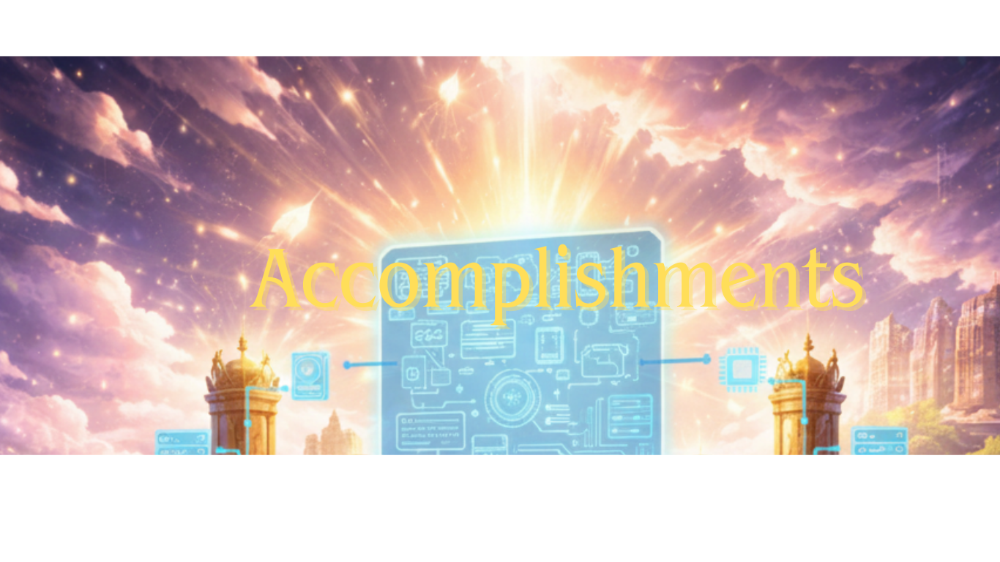

CofC C.T.C. Most Outstanding Student Award
Recognized for consistent academic effort, classroom engagement, and strong contribution to the College of Charleston learning community. This award reflects both performance and reliability.

Recognized for consistent academic effort, classroom engagement, and strong contribution to the College of Charleston learning community. This award reflects both performance and reliability.
Earned scholarship support that recognized academic potential and commitment to continued growth in higher education. This milestone helped reinforce my long-term academic and professional goals.
Participated in a community focused on cybersecurity awareness, technical curiosity, and peer learning. Club involvement supported my interest in security concepts and hands-on exploration.
Completed cybersecurity training focused on threat awareness, security operations, and defensive thinking. The certificate strengthened my foundation in real-world security practices and industry expectations.